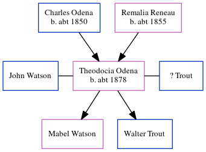

Theodocia Josephine Trout (née Odena) c1878 -
[ Home ] | [ Calendar ] | [ Surnames Index ] | [ Census Index ] | [ Family History ]The child of Charles Odena and Remalia Reneau, Theodocia Odena, the first cousin three-times-removed on the father's side of Michele Copp (née Phillips), was born in Alabama c. 18781,2 was married twice - to John Watson ? Trout. She had 2 children: Mabel with John Calvin and Walter with ?.
During her life, she was living in Justice Precinct 2, Harris, Texas in 19201; and in Houston, Harris, Texas in 19302.
Parents
- Charles T was born c. 1850
- Remalia was born c. 1855
Citations
- 1920 United States Federal Census Online publication - Provo, UT, USA: MyFamily.com, Inc., 2005. For details on the contents of the film numbers, visit the following NARA web page: NARA. Note: Enumeration Districts 819-839 on roll 323 (Chicago City.Original data - United States of America
- 1930 United States Federal Census Online publication - Provo, UT, USA: MyFamily.com, Inc., 2002.Original data - United States of America, Bureau of the Census. Fifteenth Census of the United States, 1930. Washington, D.C.: National Archives and Records Administration, 1930. T626, 2,667 rol
Family Tree
Generated by ged2site. Last updated on Jun 6, 2024